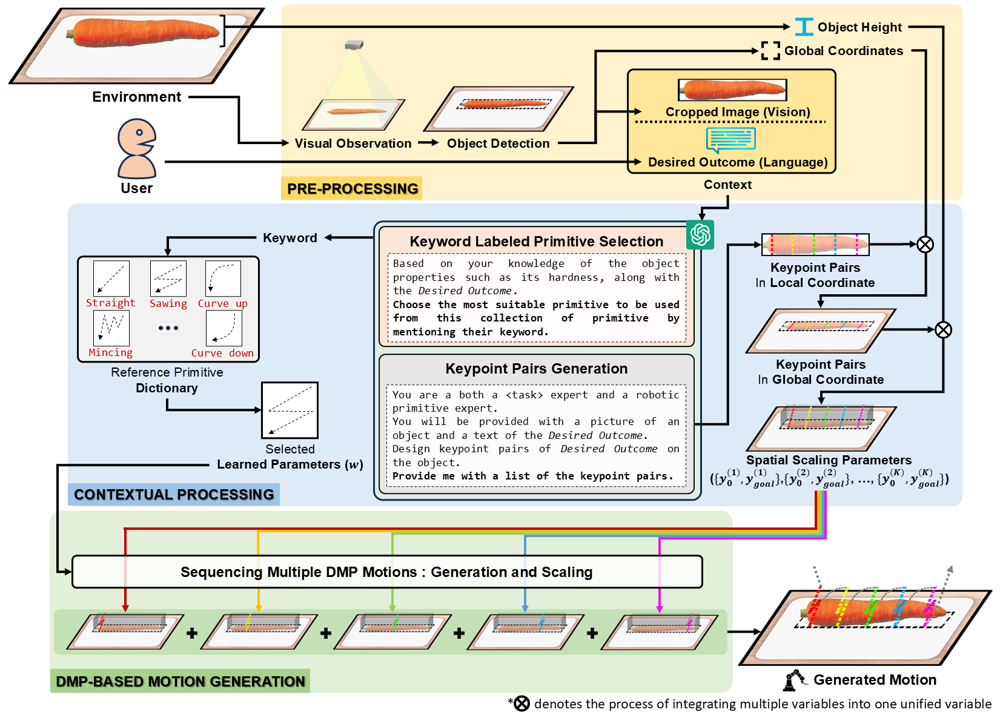

Dynamic Movement Primitives (DMPs) provide a flexible framework for encoding smooth robotic movements; however, they face challenges in integrating multimodal inputs commonly used in robotics like vision and language into their framework.
To fully maximize DMPs' potential, it's crucial to enable DMPs to respond to such multimodal inputs and to also broaden their capability to handle object-focused tasks requiring complex motion planning in one shot, as observation occlusion could easily happen mid-execution in such tasks (e.g. knife occlusion in ingredient cutting, piping bag occlusion in cake icing, hand occlusion in dough kneading, etc.).
A promising approach is to leverage Vision-Language Models (VLMs), which process multimodal data and grasp high-level concepts.
However, they typically lack the knowledge and capabilities to directly infer low-level motion details and instead serve as a bridge between high-level instructions and low-level control.
To address this limitation, we propose Keyword Labeled Primitive Selection and Keypoint Pairs Generation Guided Movement Primitives (KeyMPs), a framework that combines VLMs with sequencing DMPs.
KeyMPs use VLMs' high-level reasoning to select a reference primitive through Keyword Labeled Primitive Selection and VLMs' spatial awareness to generate spatial scaling parameters used to generalize the overall motion through Keypoint Pairs Generation, ultimately enabling one-shot vision-language guided motion generation that aligns with the intent expressed in the multimodal input.
We validate our approach through an occlusion-rich manipulation task, specifically object cutting experiments in both simulated and real-world environments, demonstrating superior performance over other DMP-based methods that integrate VLMs support.
Method
Our proposed framework, KeyMPs, integrates language and vision inputs to generate executable motions by leveraging VLMs and DMPs. It operates through three stages:
-
Pre-Processing:
The framework begins by collecting two primary types of inputs:
- Language input: User-provided instructions.
- Vision input: Environment or object representations from a camera.
An object detector identifies the object's global coordinates and produces a cropped object image, while the object's height measurement is supplied to the framework. A pixel-based object detection approach determines the global coordinates. Alternative object detection methods are also supported.
-
Contextual processing:
In keyword labeled primitive selection, VLMs employ high-level reasoning to select a reference primitive from a predefined primitive dictionary.
In keypoint pairs generation, VLMs generate 2D keypoint pairs that, combined with the object's height, define the spatial scaling parameters (\( y_0 \) and \( y_{\text{goal}} \)). These are based on combined language and vision inputs.
-
DMPs motion generation:
The reference primitive and the spatial scaling parameters are used to create the definitive DMP motion. The motion is generated by iteratively applying each spatial scaling parameter to scale the reference primitive.
The rest of the details can be found in our research paper.
Implementation
System Prompt
For this study, we employed GPT-4o, developed by OpenAI, as the foundational vision-language model (VLM). In our object cutting experiment, we utilized the following system prompt to initialize the VLMs.